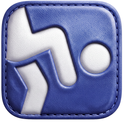

JongleMaxJongleMax · Dernière mise à jour : 21 octobre 2026
En utilisant JongleMax, tu acceptes ces conditions. Elles sont écrites pour être lues, pas pour être sautées. Si tu as moins de 18 ans, lis-les avec un parent avant de t'abonner.
JongleMax est édité par Leyons, entreprise individuelle française (SIRET 990 552 044 00010), appelée « nous » dans ces conditions. Contact : leyons.fr@gmail.com
Jongler est une activité physique. Tu la pratiques sous ta responsabilité, et sous celle de tes parents si tu es mineur. Quelques règles simples :
JongleMax n'organise pas et ne surveille pas ta pratique. Nous ne sommes pas responsables des blessures ou des dégâts liés aux conditions dans lesquelles tu joues (lieu, matériel, état de santé). Rien dans ces conditions ne limite notre responsabilité quand la loi l'interdit, notamment en cas de dommage corporel causé par notre faute.
Ce qui est gratuit, ce qui est payant. Le début de l'app (les premières questions et ton premier conseil du coach) est gratuit. Ensuite, l'utilisation de JongleMax demande un abonnement actif.
Les formules. Deux formules sont proposées :
Le prix (en euros, toutes taxes comprises) et la durée de chaque formule sont affichés sur l'écran d'abonnement, avant que tu paies. Si le prix d'une formule change, Apple te prévient avant qu'il s'applique et, quand ses règles ou la loi l'exigent, te demande ton accord.
Le renouvellement automatique. L'abonnement se renouvelle automatiquement à la fin de chaque période (un mois ou un an), sauf si tu l'annules au moins 24 heures avant la fin de la période en cours. Ton compte Apple est débité quand tu confirmes l'achat (ou à la fin de l'essai gratuit), puis à chaque renouvellement, dans les 24 heures qui précèdent la fin de la période.
L'essai gratuit. Si tu commences l'essai et que tu ne l'annules pas au moins 24 heures avant sa fin, il devient automatiquement un abonnement annuel payant. L'essai est réservé aux nouveaux abonnés, selon les règles d'Apple (un essai par compte Apple). Si tu achètes un abonnement pendant ton essai, le reste de l'essai est perdu.
Faire payer quelqu'un d'autre. Si « Demander à acheter » est activé sur ton compte Apple (c'est souvent le cas pour les plus jeunes), ton achat est envoyé à l'organisateur de ton groupe Partage familial, qui l'accepte ou le refuse. JongleMax se débloque dès qu'il accepte.
Le Partage familial. L'abonnement peut être partagé avec les membres de ton groupe Partage familial d'Apple.
Changer d'iPhone. Sur un nouvel iPhone connecté au même compte Apple, touche Restaurer les achats pour retrouver ton abonnement.
Tu peux annuler à tout moment, en quelques secondes :
Il n'y a ni formulaire, ni appel, ni e-mail à envoyer. L'annulation arrête le prochain renouvellement : tu gardes l'accès jusqu'à la fin de la période déjà payée (ou de l'essai). Pour éviter le renouvellement suivant, annule au moins 24 heures avant la fin de la période.
Supprimer l'app ou utiliser « Effacer mes données » n'annule pas ton abonnement.
Le paiement passe entièrement par l'App Store : c'est Apple (en Europe, Apple Distribution International Ltd., en Irlande) qui l'encaisse. Nous ne voyons jamais ta carte bancaire.
Comme le paiement ne passe pas par nous, nous ne pouvons pas te rembourser nous-mêmes. Les remboursements sont décidés par Apple, selon ses règles. Pour en demander un : reportaproblem.apple.com, puis J'aimerais → Demander un remboursement.
Si tu habites dans l'Union européenne, Apple applique aussi le droit de rétractation de 14 jours prévu dans ses conditions générales des services multimédias, avec les exceptions qu'elles décrivent.
JongleMax peut être utilisé par les ados. Ce n'est pas une app « pour enfants ».
Si tu as moins de 18 ans, demande l'accord d'un parent avant de t'abonner. Les outils d'Apple (Partage familial, « Demander à acheter ») permettent à ton parent de valider l'achat ou de le payer pour toi. Parents : pour toute question, écrivez-nous.
L'app, le nom et le logo JongleMax, le design, les textes, les conseils du coach, les sons et le logiciel d'analyse appartiennent à Leyons ou à ses partenaires. Nous te donnons le droit, personnel et non transférable, d'utiliser JongleMax sur tes appareils Apple, pour ton usage personnel et non commercial, tant que tu respectes ces conditions.
Tu n'as pas le droit de copier, revendre ou contourner l'abonnement de l'app, ni de la décompiler, sauf dans les cas où la loi te le permet. Tu ne peux pas non plus utiliser le nom ou le logo JongleMax pour faire croire à un partenariat avec nous.
Ces conditions complètent le contrat de licence standard d'Apple pour les apps de l'App Store, qui s'applique aussi à JongleMax. Pour toute question ou réclamation sur l'app, c'est à nous qu'il faut écrire, pas à Apple.
JongleMax fonctionne sur les iPhone et les versions d'iOS indiquées sur sa fiche App Store. Nous faisons de notre mieux pour qu'il marche sans interruption, mais nous ne pouvons pas le garantir. L'app va évoluer : des fonctions peuvent changer ou être ajoutées. Si nous retirons une fonction importante de ton abonnement, nous te prévenons dans l'app, et tu peux annuler.
Dans les limites prévues par la loi, nous ne sommes pas responsables des dommages indirects liés à l'utilisation de JongleMax. Rien dans ces conditions ne limite les droits que la loi te donne en tant que consommateur, en particulier la garantie légale de conformité des contenus et services numériques.
Si ces conditions changent, la date en haut de la page change aussi. Si un changement est important, nous te prévenons dans l'app avant qu'il s'applique. Si tu n'es pas d'accord, tu peux arrêter d'utiliser JongleMax et annuler ton abonnement.
Ces conditions sont soumises au droit français. Si tu es consommateur, tu gardes la protection des règles obligatoires du pays où tu habites. En cas de problème, écris-nous d'abord : nous cherchons une solution avec toi. Sinon, le litige est porté devant les tribunaux compétents selon la loi.
JongleMax est édité par Leyons, entreprise individuelle française, SIRET 990 552 044 00010.